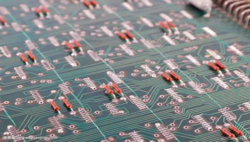

人类通过生产活动或科学试验发明创造出新产品、新理论并用于社会再生产的新技术和新方法，与原来和现在所使用工艺或手段相比其工艺手段和设施更完备、更完美，能成为推进社会发展的动力和源泉。然而，却也看到不少年轻人对这个问题认识缺少严谨性和攻坚力，图省事，无毅力，存在患得患失的功利思想。为了推进改革的不断创新，本文作者结合多年参与青年学生创新活动的实践，采用目标观察，观察后比较，比较后求异和攻关破难毅力锤炼的方法和感想，与广大热心于创新的人们交流，并与同行们在新的历史平台上，相互激励使创新的队伍不断壮大，实现不被西方纯“SCI、ESI、和IF”所湮没，让我们中国人的汗水和灵感结合起来，创造出属于我们自己的公式、定理和精巧的机器，从而破解科学上的一个个世界级难题。用“上甘岭”精神创造出更多更富于时代特征的物理“第三种波粒二象性”的甘永超公式、“巨壳子炮”和“太极粒波”的科学技术哲学与文化原创，用生命有序的新科学理论改写达尔文“生物进化论”，揭示生命“生死观”的神秘性。
众所周知，发明创造源自人类的生产实践。人们通过劳动，发现了取得物质财富的途径和手段，然后加以归纳总结，并提升而产生。生产实践的过程就是一个对环境进行观察、找问题、思考解决问题的方法或技术，并形成一种科学理论的过程，包含两层含义即发明和创造。发明是通过观察所发生的某一事件，找到改造客观存在问题的渊源，从而设计或规划出攻克的方法和技术，从而实现对问题的解决，获得结果，而且可被重复，并获得与前者类似的结果。创造是对同一事件所解决的结果再用前述过程进行规模化的数学放大，形成更多的财富和形成更大的影响力，使更多的人能分享，产生更好的价值。因此，发明是创造的前提，为后者的形成奠定基础，后者是前者的数学放大、完善、发展和对社会的渗透，二者的结合就叫创新。为推动万众创新和大众创业，驱动社会经济的发展，本文结合自身走过的艰辛道路，通过学会观察、懂得比较，培养兴趣，找准目标，大胆想象，超越现实，从而实现走向未来。
上一篇：用创新推动材料发展与应用 下一篇：科学助力节能环保 打造绿色中国梦想